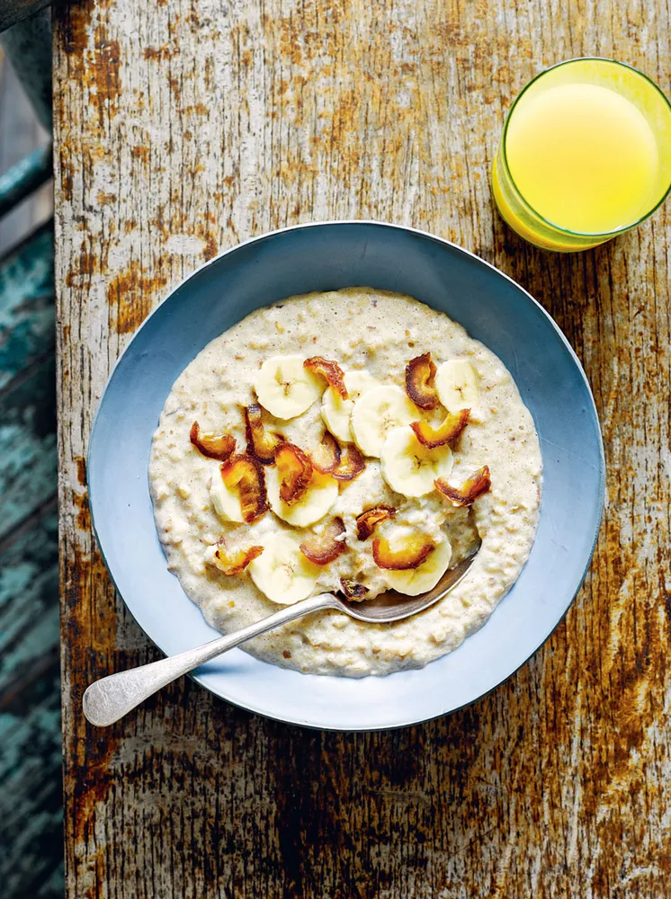

приготовление:
-
Положить в небольшую кастрюлю 50 г резаной овсяной крупы, влить 175 мл воды и 175 мл молока — обычного или растительного, например кокосового. Добавить щепотку соли и довести до кипения.
Убавить огонь до слабого или среднего, накрыть крышкой и варить 13 минут при лёгком кипении, периодически помешивая.
-
Отложить несколько ломтиков банана и половинку одного из 3 фиников для подачи. Оставшийся банан размять вилкой до состояния пюре, а финики мелко нарезать.
Добавить банановое пюре и финики в кашу, перемешать и снова накрыть крышкой. Варить ещё 10 минут на слабом или среднем огне, чтобы каша слегка кипела. Во время варки несколько раз перемешать.
-
Переложить овсянку в тарелку и украсить оставленными ломтиками банана и кусочками фиников.